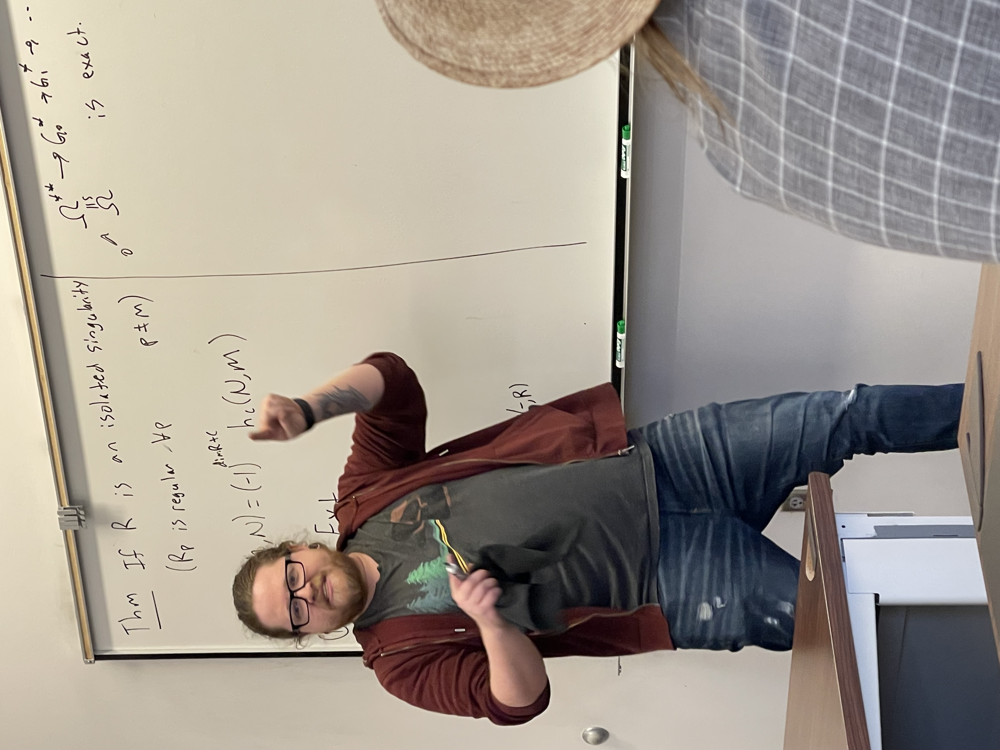

I care deeply about my role as an instructor in the
classroom. The common adage is that mathematics is not a spectator
sport. Accepting this premise, the real work comes in answering the
question: how do we foster genuine participation? I believe that in order for a student to participate they must first feel valued and respected. This is why my main goal in the classroom is to develop an environment that is welcoming and collaborative.
A space where students feel comfortable with exploaration is a space where learning happens best.
Instructor of Record
- Math 103: College Algebra and Trigonometry,
Spring 2022, Spring 2021, Fall 2019
- Math 106: Calculus I,
Fall 2021
- Math 104: Applied Calculus,
Fall 2020, Spring 2020, Summer 2019
- Math 107: Calculus II,
Summer 2020
- Math 203J: Contemporary
Mathematics for Journalism majors,
Spring 2019
- Math 100A: Intermediate Algebra,
Fall 2018
In these courses I focused on an active learning classroom
structure. A usual class day comprised of students completing group work
interspersed with short class discussions to introduce definitions
or do examples. For many courses, worksheets had been developed by UNL to
facilitate active learning, though these had not yet been developed
for Math 203J, Math 107, or Math 104 (Summer 2019, Spring
2020). For those semesters I produced my own daily worksheets to guide group
discussions and scaffold the course content.
Associate Convener
- Math 106: Calculus I,
Fall 2022, Spring 2023
For the Fall 2022 and Spring 2023 semester I have the opportunity to
oversee the Calculus I recitation instructors. I asked to take on this role
because I'm excited to provide mentorship to those new to
teaching. Most recitation instructors are first year graduate
students or undergraduates and so they have little to no
experience teaching. The associate convener is responsible for
running weekly meetings to discuss course logistics and provide
advice on how to introduce topics. The associate convener also does teaching observations for those new to
teaching. We then have a follow-up teaching conversation to discuss how the class is going.